통신선로산업기사 (2004-09-05 기출문제)
1과목: 디지털전자회로
1. 연산증폭기에 대한 설명이다. 틀린 것은?
- 고이득 차동 증폭기가 주축을 이룬다.
- IC화된 연산 증폭기는 고신뢰도, 고안정도, 회로의 소형화 등 장점이 있다.
- 이상적 연산증폭기인 경우 입력저항은 zero, 출력저항은 ∞ 를 갖는다.
- 가상접지는 물리적인 구성을 표시하는 것이 아니고, 전압증폭도를 구하는데 유용하다.
(정답률: 알수없음)

2. 2-out of-5 code에 해당되지 않는 것은?
- 10010
- 11000
- 10001
- 11001
(정답률: 알수없음)
3. 다음 논리식을 간단히 하면?
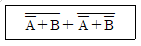
- A
- B
- A+B
- A·B
(정답률: 알수없음)
4. 회로에서 Barkhausen의 발진조건이 만족되는 조건은?
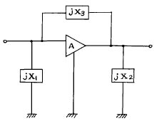
- X1 < 0, X2 > 0, X3 > 0
- X1 < 0, X2 < 0, X3 < 0
- X1 > 0, X2 < 0, X3 > 0
- X1 < 0, X2 < 0, X3 > 0
(정답률: 알수없음)
5. 다음 궤환증폭기의 특성에 관한 설명 중 틀리는 것은?
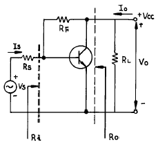
- 궤환으로 입력 임피이던스 Ri는 감소한다.
- 궤환으로 출력 임피이던스 Ro는 감소한다.
- 궤환으로 전류이득Io/Is는 감소한다.
- RF가 작을수록 출력전압 Vo는 커진다.
(정답률: 알수없음)
6. PNP 접합 TR 증폭회로에서 콜렉터의 전위는 베이스 전위를 기준으로 했을 때 어떤 전위를 걸어 주어야 하는가?
- 정 전위
- 부 전위
- 같은 전위
- 0 전위
(정답률: 알수없음)
7. 에미터 접지일 때 전류증폭율이 각각 hFE1, hFE2인 두개의 트랜지스터 Q1과 Q2를 그림과 같이 접속하였을 때의 콜렉터 전류 Ic의 크기는?
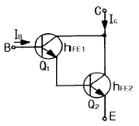
- hFE1·hFE2·IB
- (hFE1/hFE2)·IB
- hFE2(hFE1+1)·IB
- hFE1·IB+hFE2(hFE1+1)·IB
(정답률: 알수없음)
8. 전자계산기의 주기억장치에서 전하의 누설에 대비하여 주기적으로 회생(refresh)시켜 주어야 하는 것은?
- Mask ROM
- EPROM
- Static RAM
- Dynamic RAM
(정답률: 알수없음)
9. 8진수 67을 16진수로 바르게 표기한 것은?
- 43H
- 37H
- 55H
- 34H
(정답률: 알수없음)
10. 다음 그림의 회로는 무슨 회로인가?
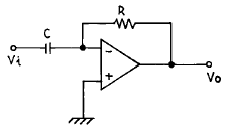
- 미분기
- 적분기
- 가산기
- 증폭기
(정답률: 알수없음)
11. 다음 논리계열 중 스위칭 속도가 제일 빠른 것은?
- TTL
- CMOS
- ECL
- Schottky TTL
(정답률: 알수없음)
12. 신호파의 최고주파수가 4[kHz] 일 때 PCM 변조방식에서 샘플링 주파수 조건은?
- 4[kHz] 이하
- 5[kHz] 이상
- 6[kHz] 이하
- 8[kHz] 이상
(정답률: 알수없음)
13. 다음 회로에서 S=1, R=0 이 인가되었을 때 Q와
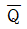
의 출력 상태는?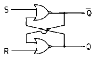
- Q=0,
 =1
=1 - Q=1,
 =1
=1 - Q=0,
 =0
=0 - Q=1,
 =0
=0
(정답률: 알수없음)
14. 다음 정류회로에 출력전류가 흐르지 않는 범위는? (단, Vi = Vm cos ωt이다.)
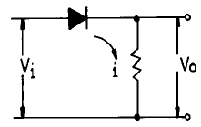
- 0 < ωt < π
- π/2 < ωt < 3π/2
- 0 < ωt < π/2
- π/2 < ωt < 2π
(정답률: 알수없음)
15. J - K 플립플롭에서 Jn = 0, Kn = 1일 때 클록펄스가 1 상태라면 Qn+1의 출력상태는?
- 부정
- 0
- 1
- 반전
(정답률: 알수없음)
16. 전원의 출력단에 가장 적합한 증폭기 회로의 형태는?
- 공통 에미터(C-E)증폭기
- 캐스코드(Cascode)증폭기
- 공통 베이스(C-B)증폭기
- 공통 컬렉터(C-C)증폭기
(정답률: 알수없음)
17. 중심 주파수가 455[㎑]이고, 대역폭이 10[㎑]가 되는 단동조회로를 만들려면 이 회로 부하의 Q는 얼마로 하여야 하는가?
- 42.3
- 45.5
- 52.3
- 55.4
(정답률: 알수없음)
18. 무변조때의 출력이 1[㎾]인 무선전화 송신기를 80[%] 변조하면 출력은 몇[㎾]가 되는가?
- 0.64[㎾]
- 1.32[㎾]
- 1.80[㎾]
- 2.84[㎾]
(정답률: 알수없음)
19. D 플립-플롭을 이용하여 그림과 같은 회로를 구성하고, 클럭(clk)단자에 5[kHz] 클럭펄스를 인가하였다. 동작 시작단계에서 Q 출력을 +5[V]로 하였다면 출력은?
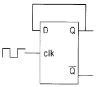
- 10[kHz]
- 2.5[kHz]
- 5[kHz]
- 5[V]
(정답률: 알수없음)
20. 다음과 같은 RC회로에 직류 기전력을 가했을 때 해당되지 않는 그림은?
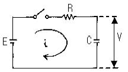
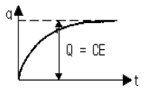
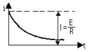
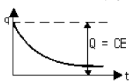
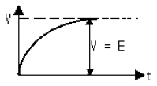
(정답률: 알수없음)
2과목: 유선통신기기
21. 다음 중 종합 정보통신망에서 ISDN 단말 장치와 ISDN 망간을 연결 시켜주는 장치는?
- S 인터페이스카드
- 단말 정합 장치(TA)
- 회선 종단 장치(NT)
- 중계선 정합 장치
(정답률: 알수없음)
22. 기준클럭을 제공하는 방법 중에서 올바르지 않은 방법은?
- 기준클럭 공급장치로부터 기준클럭을 제공하였다.
- 외부기준클럭에 동기된 장비에서 오는 광신호를 연결하고 수신종속으로 장비를 운용하였다.
- SDH 장비를 통해 전달되는 광신호에 다중화된 E1신호를 기준클럭으로 제공하였다.
- PDH 장비를 통해 수신된 기준클럭 공급장치의 E1신호를 기준클럭으로 제공하였다.
(정답률: 알수없음)
23. 다음 중 디지털 측정의 대상으로 가장 알맞는 것은?
- 통신의 전송량(이득 손실)의 측정
- 통신 회선의 측정(잔류손실)
- 누화 잡음의 측정
- 전송로 부호 에러율 측정
(정답률: 알수없음)
24. 보오(Baud)에 대한 설명으로 옳은 것은?
- 1초 동안에 전송한 신호변화의 신호단위 수
- 1분 동안에 전송한 신호변화의 신호단위 수
- 1초 동안에 전송한 문자의 수
- 1분 동안에 전송한 문자의 수
(정답률: 알수없음)
25. 전송회로에서 절대 레벨에 대한 설명으로 알맞지 않은 것은?
- 전원의 유기전압이 0.775[V]인 전압 레벨
- 부하양단에 걸리는 전압이 0.775[V]인 전압 레벨
- 회로에 흐르는 전류는 1.291[mA]이다.
- 전원의 유기전압은 0.775[V]*2=1.55[V]이다.
(정답률: 알수없음)
26. 전전자 교환기 TDX-10의 스위치의 구조는?
- T-S-S
- S-T-S
- T-S-T
- S-T-T
(정답률: 알수없음)
27. TDX-10 교환기는 기본적으로 3개의 subsystem으로 구성되어 있다. 3개의 subsystem에 들지 않는 것은?
- CCS
- INS
- ASS
- SSS
(정답률: 알수없음)
28. 다음 중에서 호의 종류(Call Type) 중 출중계호(Outgoing Call)에 대한 설명으로 옳은 것은?
- 동일 교환기 내에 수용된 가입자끼리 발신과 착신이 이루어지는 호이다.
- 자국에서 발신하여 타국에 착신되는 호를 말한다.
- 타국에서 발신하여 자국 교환기에 수용된 가입자에게 착신되는 호를 말한다.
- 타국에서 발신된 호가 자국 교환기를 거쳐 다른 타국 교환기로 착신되는 호를 말한다.
(정답률: 알수없음)
29. PCM 단국 장치에서 북미식 PCM신호(T1)1개의 프레임을 구성하는 펄스의 숫자는?
- 125개
- 193개
- 1544개
- 8000개
(정답률: 알수없음)
30. 전력이 얼마로 감쇄하면 전송량이 약 3[dB]감쇄 하는가?
- 1/2
- 1/3
- 1/4
- 1/8
(정답률: 알수없음)
31. 국내에서는 비동기식 전송계위로 북미방식과 유럽방식이 혼재된 형태인 하이브리드방식으로 사용하고 있다. 다음 중 국내의 3차군 비동기식 전송계위(DS3)의 전송속도는?
- 1.544 Mbps
- 2.048 Mbps
- 34.386 Mbps
- 44.736 Mbps
(정답률: 알수없음)
32. TDX-1A 에 대한 설명 중 틀린 것은?
- 국내에서 개발한 전전자교환기이다.
- 접속가능한 자국수는 16RSS 이다.
- 트래픽은 1600 Erl이다.
- 가입자수는 최대 1600 회선을 수용한다.
(정답률: 알수없음)
33. 전화기의 수화기가 갖는 동 임피던스에 대한 설명으로 옳은 것은?
- 동저항에서 동리액턴스를 뺀값
- 동저항에서 동리액턴스를 곱한값
- 동저항에 동리액턴스를 합한값
- 동저항과 동리액턴스의 벡터적인 합
(정답률: 알수없음)
34. 전화교환시스템에서 통신이 이루어지기 위해서는 신호의 기능이 매우 중요하다. 신호의 기능을 구분할 때 해당하지 않는 것은?
- 감시기능
- 선택기능
- 운용기능
- 음성 통화기능
(정답률: 알수없음)
35. 아날로그 변조방식과 관계없는 것은?
- ASK
- PM
- FM
- AM
(정답률: 알수없음)
36. 전전자교환기 TDX-1B의 최대 트래픽 처리용량은?
- 1600 Erl
- 3600 Erl
- 26000 Erl
- 2200 Erl
(정답률: 알수없음)
37. 광통신 시스템의 장점이 아닌 것은?
- 고속 광대역 성으로 대용량의 정보 전송
- 세심 경량으로 가볍고 취급이 용이
- 전력유도 영향을 받지 않음
- 중계기에 별도의 급전선을 사용
(정답률: 알수없음)
38. 20회선의 중계선에 최번시 운반호수가 420호이고, 호의 평균보류시간이 2분이다. 이 때 중계선의 회선능률은?
- 10[%]
- 21[%]
- 42[%]
- 70[%]
(정답률: 알수없음)
39. 전화가입자로부터 고장신고가 있어서 펄스측정기로 해당 가입자 선로로 펄스를 송출한 결과 동일한 펄스가 4.5[㎲] 후에 검출되었다. 이 가입자 선로에 사용된 케이블의 전파 속도가 200[m/㎲]라 할 때 고장 원인 분석으로 옳은 것은?
- 전화국에서 450[m] 부근에서 선로의 단선이 있다.
- 전화국에서 450[m] 부근에서 선로의 단락이 있다.
- 전화국에서 900[m] 부근에서 선로의 단선이 있다.
- 전화국에서 900[m] 부근에서 선로의 단락이 있다.
(정답률: 알수없음)
40. 어떤 호(call)의 평균점유시간을 H, 시간당 호의 발생수를 C, 트래픽 처리용량을 E라 할 때 이들의 관계식은? (단, 호손율은 무시)
- E = H × C
- E = H + C
- E = H / C
- E = C / H
(정답률: 알수없음)
3과목: 전송선로개론
41. 개방임피던스 300/45°[Ω],단락임피던스 400/-15°[Ω] 일때의 특성임피던스
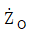
는? = 346/15°[Ω]
= 346/15°[Ω] = 500/15°[Ω]
= 500/15°[Ω] = 700/30°[Ω]
= 700/30°[Ω] = 1200/30°[Ω]
= 1200/30°[Ω]
(정답률: 알수없음)
42. 폼스킨(F/S) 케이블의 특성에 관한 설명으로 적합하지 않은 것은?
- 심선 색상은 CCP 케이블 방식을 채택하였다.
- 젤리를 충전한 경우 침수 및 누수고장이 적다.
- 종이 절연보다 통신망의 전송품질을 향상시킨다.
- 심선내부에 PE, 외부에 PEF로 2중 절연되어 있다.
(정답률: 알수없음)
43. 사용 주파수가 낮고 또 특성 임피던스가 높은 시내 전화 케이블에서 주로 어떤 누화가 심한가?
- 전자결합에 의한 누화
- 정전결합에 의한 누화
- 반사에 의한 누화
- 간접누화
(정답률: 알수없음)
44. 다음은 PCM 의 양자화(quantizing)에 관련된 설명으로 옳지 않은 것은?
- 양자화는 아날로그 양의 진폭을 디지탈 양으로 변환하는 것이다.
- 양자화된 파형은 원파형과 근사할수록 좋다.
- 양자화에는 양자화 잡음이 발생한다.
- 비선형 양자화에는 압신기를 사용하지 않는다.
(정답률: 알수없음)
45. 다음은 전화선의 표피작용에 대한 설명으로 잘못된 것은?
- 심선도체의 도전율을 증가시키면 표피작용은 더욱 심화된다.
- 사용 주파수가 높아지면 표피작용은 더욱 심화된다.
- 표피작용이 심화되면 실효저항은 감소된다.
- 심선도체의 직경이 굵어지면 표피작용은 더욱 심해진다.
(정답률: 알수없음)
46. 누화를 경감시키기 위한 방법이 아닌 것은?
- 압신기
- 시험접속
- 샘플링
- 프로징
(정답률: 알수없음)
47. 다음 중 2중 절연구조로 심선절연방법을 개선하여 누화특성이 우수하고 외부적인 유도잡음에 강하여 접속의 기계화가 가능한 케이블은?
- FS 케이블
- WT 케이블
- ST 케이블
- CCP 케이블
(정답률: 알수없음)
48. 통신케이블의 인입, 접속작업, 관로 및 케이블 점검 등의 목적으로 설치하여 그 안에서 사람이 작업할 수 있는 구조물로서 인공(Man Hole)이 보편적으로 설치, 운용되고 있다. 일반적으로 사용되는 인공의 형태가 아닌 것은?
- 직선형
- 원통형
- 분기 L형
- 분기 십자형
(정답률: 알수없음)
49. 전송 선로의 위상정수 β = 0.3174[㎭/㎞]인때 1[㎑]의 전파 속도는 약 얼마인가?
- 59370[㎞]
- 19786[㎞]
- 1830[㎞]
- 989[㎞]
(정답률: 알수없음)
50. 무손실 선로에서 수단전압의 절대치가 송단전압의 절대치보다 커지는 현상은?
- 초전도현상
- 페란티(ferranti)현상
- 코로나(corona)현상
- 자기려자현상
(정답률: 알수없음)
51. 다음 중 전자적 유도방해에 가장 취약한 케이블은?
- 광섬유케이블
- 동축케이블
- 폼스킨케이블
- PVC외피케이블
(정답률: 알수없음)
52. 광섬유 케이블에서 존재하는 손실중 레일리히(Rayleigh) 산란손실을 나타낸 것은?
- 광섬유 케이블을 구부릴때 생기는 손실이다.
- 빛의 파장보다 작은 범위에서 물질의 성분 또는 밀도의 변화에 의해 생기는 손실이다.
- 광섬유를 접속할때 생기는 손실이다.
- 광섬유 내에 존재하는 OH기에 의한 흡수 손실이다.
(정답률: 알수없음)
53. 광섬유 케이블의 특징을 설명한 것으로 틀린 것은?
- 전송대역폭이 광대역이므로 파장다중이 가능하다.
- 잡음 및 누화현상이 일어나지 않는다.
- 전자유도 방해를 받지않으나 온도변화에 영향을 많이 받는다.
- 주원료인 석영이 풍부하고, 가벼우며 가요성이 좋아서 취급하기 편리하다.
(정답률: 알수없음)
54. 지하관로의 공수(N)를 구하는 식은?
- N= 수용 케이블 조수+예비관 공수+직매 케이블 조수
- N= 계획 케이블 조수+환경 배율
- N= 지하관로수+예비관공수
- N= 수용 케이블 조수+계획 케이블 조수
(정답률: 알수없음)
55. 패킷교환방식의 통신선로에 대한 장점이 아닌 것은?
- 전송선로 이용율을 극대화할 수 있다.
- 장거리 통신시 경제적이다.
- 선로 고장시 우회경로 설정이 용이하다.
- 전송속도가 다른 터미널간에는 통신이 불가능하다.
(정답률: 알수없음)
56. 광섬유케이블의 종류가 아닌 것은?
- 단일모드 광섬유케이블
- 다중모드 광섬유케이블
- 계단 굴절형 케이블
- 다중 굴절형 케이블
(정답률: 알수없음)
57. 케이블 심선의 절연재로서 이상적인 조건이 아닌 것은?
- 가요성이 있어야 한다.
- 내열성이 있고 흡수성이 강해야 한다.
- 기계적 강도가 커야 한다.
- 유전율이 낮아야 한다.
(정답률: 알수없음)
58. 반송케이블에서 고주파(f)에 대한 위상정수(β)의 특성은?
- ｆ에 비례한다.
- ｆ에 반비례한다.
- √f에 비례한다.
- √f에 반비례한다.
(정답률: 알수없음)
59. 광섬유 케이블 구조에 있어서 코어(core)에 대칭되는 재료로서 굴절율이 약간 낮은 것은?
- 크래드(clad)
- 그래디드 인덱스(graded index)
- 모드(mode)
- 싱글 모드(single mode)
(정답률: 알수없음)
60. 외경이 83[mm]인 시내케이블을 구부려 포설하려고 한다. 곡률반경은 얼마 이상으로 하여야 가장 적합한가?
- 500[mm]
- 420[mm]
- 330[mm]
- 160[mm]
(정답률: 알수없음)
4과목: 전자계산기일반 및 선로설비기준
61. 정보통신공사의 하도급을 올바르게 설명한 것은?
- 수급한 공사를 일괄하여 제3자에게 하도급 할 수 없다.
- 하도급을 하고자 할 때에는 도급인의 서면승낙을 얻지 않아도 된다.
- 하수급인은 하도급된 공사를 다시 제3자에게 하도급할 수 있다.
- 하도급의 경우 완성된 목적물에 하자가 있는 경우 수급인만 도급인에 대하여 책임을 지며, 하수급인은 연대책임이 없다.
(정답률: 알수없음)
62. 문자· 부호· 영상· 음향등 정보를 저장 처리하는 장치나 그에 부수되는 입· 출력장치 또는 기타의 기기를 이용하여 정보를 송신· 수신 또는 처리하는 설비를 무엇이라 하는가?
- 전화용설비
- 전기통신설비
- 정보통신설비
- 전송망설비
(정답률: 알수없음)
63. 정보를 기억장치에 기억시키거나 읽어내는 명령이 있고난 후부터 실제로 데이터가 기억되거나 또는 읽기가 시작되는데 소요되는 시간은?
- Access time
- Cycle time
- Search time
- Seek time
(정답률: 알수없음)
64. 중앙처리장치로부터 발생되는 기억장치 읽기 신호와 쓰기 신호를 이용하여 입출력장치에 대한 읽기와 쓰기를 수행할 수 있는 방식은?
- Interrupt I/O
- Isolated I/O
- Programmed I/O
- Memory Mapped I/O
(정답률: 알수없음)
65. 형식승인이 취소된 후 얼마동안 동일한 종류의 형식승인을 신청할 수 없는가?
- 12개월
- 6개월
- 3개월
- 1개월
(정답률: 알수없음)
66. 정보통신공사업의 등록기준은?
- 기술능력, 자본금, 기타 필요한 사항
- 공사경력, 기술인력, 자본금
- 설계능력, 공사능력, 사무실
- 기술자격자, 자본금, 사업능력
(정답률: 알수없음)
67. 전기통신사업자간의 적정경쟁의 확보, 전기통신역무이용자의 권익보호 및 중요통신정책의 수립시행에 관한 사항 등을 심의 또는 의결하는 정보통신부 소속기관은?
- 통신위원회
- 형식승인심의회
- 통신진흥협의회
- 한국정보통신기술협회
(정답률: 알수없음)
68. 일반적인 컴퓨터 구조에서 CPU에 포함되지 않는 것은?
- 제어장치
- 레지스터
- 보조기억장치
- 논리연산장치
(정답률: 알수없음)
69. 다수의 인터럽트 요청이 있는 경우, 특정한 인터럽트 요구에 대해서만 인터럽트가 금지되도록 사용하는 것은?
- 인터럽트 인에이블(interrupt enable)
- 벡터 테이블(vector table)
- 인터럽트 마스크(interrupt mask)
- 우선순위(priority)
(정답률: 알수없음)
70. 정보통신정책심의위원회에서 심의하는 정보통신에 관한 주요 정책 사항이 아닌 것은?
- 전기통신기본계획
- 기술진흥시행계획
- 기간통신사업의 허가
- 전기통신설비의 제공
(정답률: 알수없음)
71. 기간통신사업자가 선로 등을 설치하기 위하여 타인의 토지 등을 사용하여야 하는데, 그 토지 등의 소유자와 협의가 성립되지 않을 경우 취할 조치 방법은?
- 소관청의 허가를 받아야 한다.
- 전혀 사용할 수 없다.
- 건설교통부의 승인을 받는다.
- 공익사업을 위한 토지 등의 취득 및 보상에 관한법이 정하는 바에 의한다.
(정답률: 알수없음)
72. 마이크로 컴퓨터에서 널리 채택되어 있는 코드로서 특히 데이터 통신용으로 많이 쓰이고 있는 것은?
- ASCII
- UNICODE
- HAMMING CODE
- GRAY CODE
(정답률: 알수없음)
73. 관로를 보도에 매설하는 경우의 매설기준은?
- 120[cm]이상
- 100[cm]이상
- 90[cm]이상
- 60[cm]이상
(정답률: 알수없음)
74. 다음 중 명령어가 해독되는 장치는?
- main storage
- ALU
- control unit
- instruction counter
(정답률: 알수없음)
75. 전기통신설비의 기술기준은 국가의 중요한 기반 구조인 전기통신망을 외부의 전기적 또는 물리적 위해로부터 보호하기 위하여 강제적으로 규제하는 기술적 요건을 규정하고 있다. 동 기술기준에서 규정하고 있는 내용이 아닌 것은?
- 통신설비간의 책임 한계 설정
- 통신설비 상호간에 미치는 악영향의 방지
- 전기통신사업자 보호를 위한 적정 수준의 서비스 품질 확보
- 전기통신기자재의 기술기준
(정답률: 알수없음)
76. 16진수 73C.4E 를 10진수로 변환하면 다음 중 어느 값이 근사치인가?
- 185.23
- 1852.3⑤
- 18523.⑤
- 123.25
(정답률: 알수없음)
77. 인터럽트 발생시 되돌아 올 주소(Return Address)를 기억시키기 위하여 사용되는 것은?
- Program Counter
- Accumulator
- Data Segment
- Stack
(정답률: 알수없음)
78. 논리회로에서의 인버터(inverter)와 같이 복잡한 논리연산을 위한 연산자로 이용되며 음수의 표현에 필요한 연산기는?
- MOVE
- Complement
- AND 연산
- OR 연산
(정답률: 알수없음)
79. 다음 설명 중 틀린 것은?
- 기계어는 컴퓨터가 직접 해석하고, 명령을 실행할 수 있는 언어이다.
- 어셈블리 언어는 기계어에 대응하는 의사 기호를 사용하여 기술한 기호 언어이다.
- C언어는 유닉스용으로 개발한 언어로서 객체지향적인 프로그래밍 언어이다.
- PL/I는 복잡한 데이터를 쉽게 처리할 수 있으나, 리스트 처리가 불가능하다.
(정답률: 알수없음)
80. 기간통신사업을 경영할 수 있는 자로 허가받은 자로부터 전기통신회선설비를 임차하여 전기통신역무를 제공하는 사업을 무엇이라 하는가?
- 기간통신사업
- 부가통신사업
- 별정통신사업
- 구내통신사업
(정답률: 알수없음)